Community ecology: the species of three habitats
Do woodland, hedgerows and fields hold the same ground beetles? From the table of species to rarefaction, an NMDS on Bray–Curtis, a PERMANOVA and its dispersion test, the indicator species, and what to write in a paper.
The data are simulated. No beetle was caught: the table was made by the script communautes.R, with a fixed seed, for this tutorial. The species and their habitats are real; their numbers are made up from a mean catch of each species in each habitat, the hedgerows taking a share of the woodland's species and of the field's.
The question and the data
Ground beetles (carabids) are caught in pitfall traps, plastic cups sunk level with the ground and left open for three weeks in May. In a farmed landscape, 12 traps were set in woodland, 12 along hedgerows and 12 in arable fields. Do the three habitats hold the same species, as many of them, and which species characterize each one?
Download ground_beetles.csv (36 rows, one per trap):
| Column | Content |
|---|---|
| trap | the row's name: P01 to P12 in woodland, P13 to P24 along hedgerows, P25 to P36 in fields |
| habitat | woodland, hedgerow or field |
| Abax parallelepipedus … Trechus quadristriatus | the number of individuals of each species caught in the trap (26 columns, in alphabetical order) |
Open it with File › Open (Ctrl+O): the project has 36 observations and 27 variables (the first column names the observations).
1. Which analysis?
Model › Which analysis?: tick Many species at once. Nuée proposes the 26 species as the
response (columns of whole numbers, zero or more, with zeros) and habitat as the explanatory
variable. To see how the composition changes between groups, it recommends a PERMANOVA, with an
NMDS and the indicator species among the alternatives.


Close it for now: richness comes first.
2. How many species? Rarefaction
A trap that catches more beetles finds more species: the numbers of species of two traps compare
only for the same number of individuals. Plots › Rarefaction and species accumulation (also under
the project in the explorer): Species from Abax parallelepipedus to Trechus quadristriatus,
Take the range, then By group: habitat.

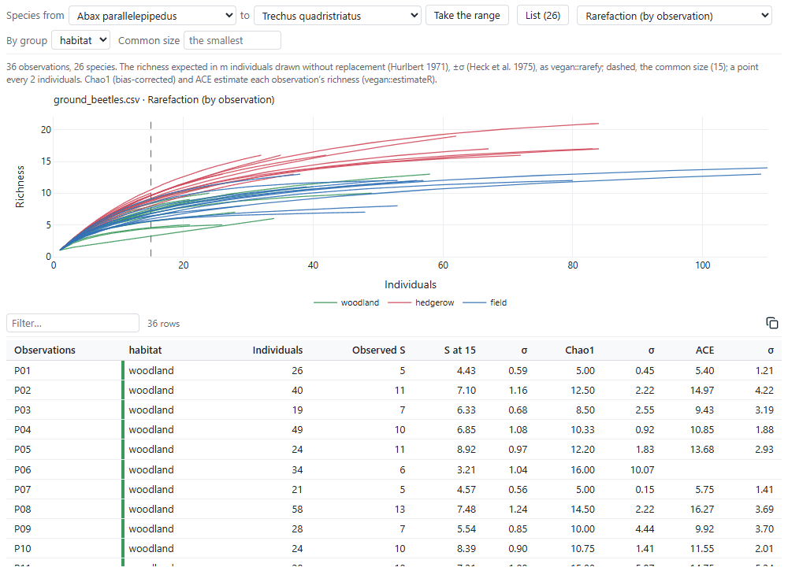

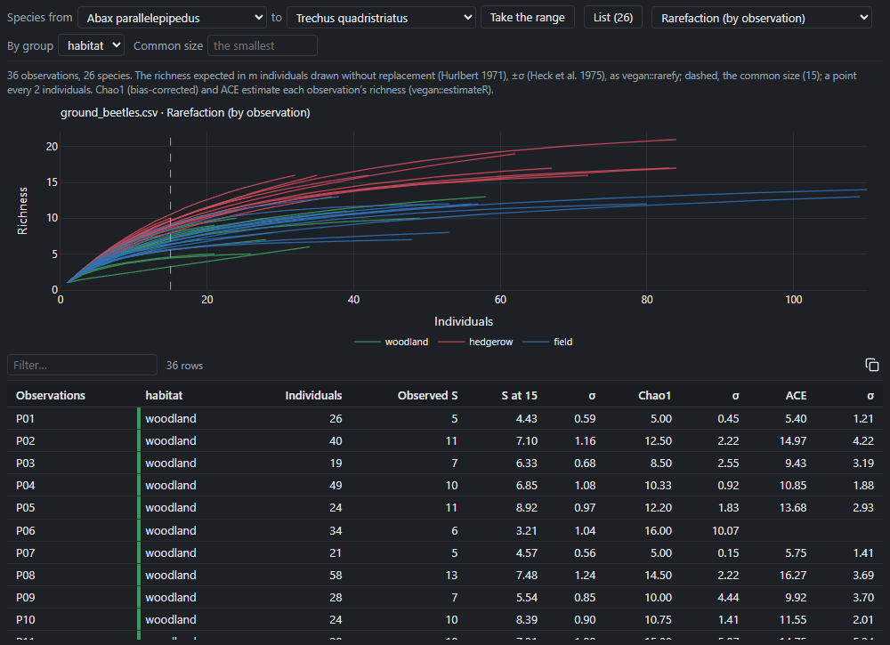
Each curve is the number of species expected in m individuals drawn from the trap's catch (Hurlbert, 1971). Read them at the same individuals: the dashed line, 15, is the smallest catch (trap P14). At 15 individuals, the hedgerow traps hold 8.02 to 10.57 species, the woodland ones 3.21 to 8.92 and the field ones 5.60 to 9.13, although the fields catch the most beetles (29 to 110 a trap). The table gives each trap's richness at 15 (S at 15), and two estimates of what it would hold with a far larger catch, Chao1 and ACE. They are only as good as the catch: P06's 34 beetles are 29 Abax parallelepipedus and five species seen once each, so Chao1 gives 16 ± 10.07 and ACE can't be computed.
Choose Accumulation (over the observations) in the same view:

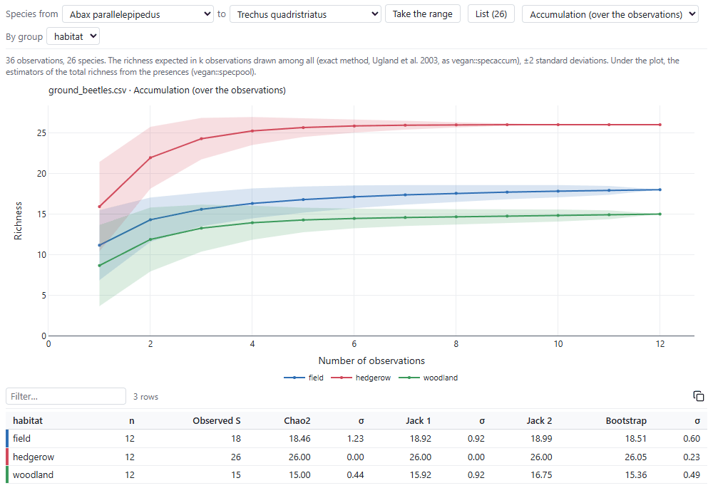

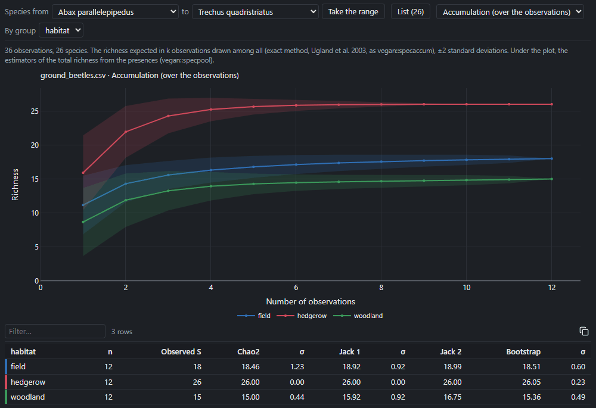
Each curve is the number of species expected in k traps of the habitat (exact method, Ugland et al., 2003). The curves flatten: twelve traps found nearly every species of their habitat. Chao2, the jackknifes and the bootstrap estimate the total richness from the species seen in only one or two traps: 18 species observed in the fields, 18.46 by Chao2 and 18.99 by the second-order jackknife; 15 in the woodland, up to 16.75; and all 26 along the hedgerows, which share the woodland's species and the field's.
3. The NMDS: who resembles whom
An ordination places the traps on a plane, near each other when their species resemble each other.
Back in Model › Which analysis?, open the NMDS among the alternatives: New model opens with
the species as Y and habitat as X, to be fitted onto the plane afterwards.
On the General tab, keep the Bray–Curtis distance and choose the Transformation: square root then Wisconsin (as metaMDS).
- The Bray–Curtis dissimilarity between two traps is 0 when they hold the same species in the same numbers, and 1 when they share none.
- The square root weakens the most abundant species (Pterostichus melanarius, 275 beetles in all), which would otherwise make the dissimilarity on their own; Wisconsin's double standardization then gives each species the same maximum, and each trap the same total: a trap that caught twice as many beetles, because it was dug in deeper, doesn't count twice as much. It is what the metaMDS function of vegan does by default for counts.

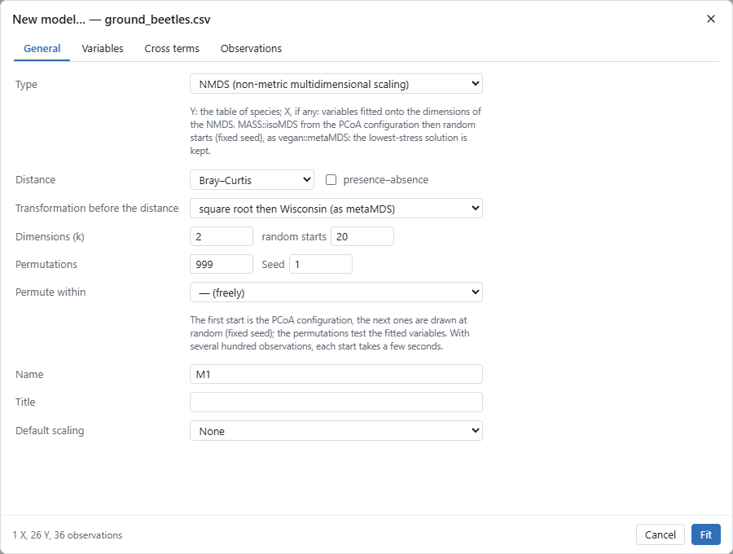

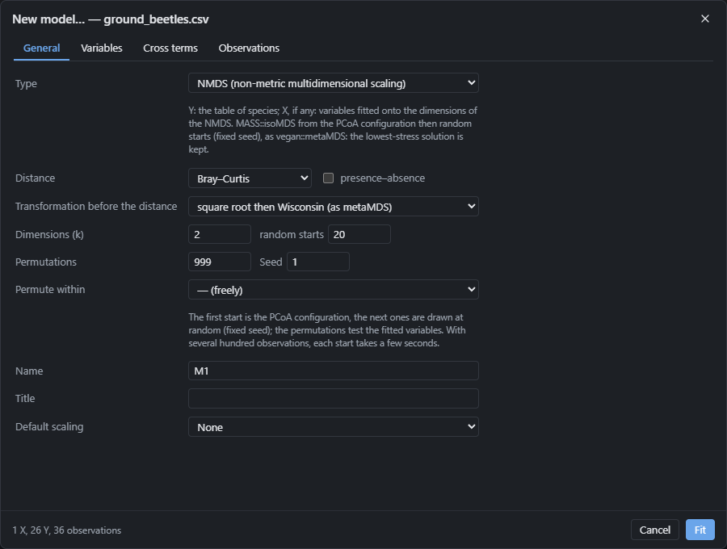
Click Fit. The NMDS (Kruskal, 1964) looks for the positions whose distances keep the order of the dissimilarities, from the PCoA's configuration and 20 random starts; the Summary gives its stress, 0.1347: below 0.1 the order is well kept, beyond 0.2 the plane is to be read with care. Found again 1: another start reached the same configuration, a sign that it isn't a local minimum (with 0, raise the random starts).
The model's views open with it (otherwise, double-click them under the model in the explorer). In
Ordination, Colour: habitat; untick Species (Y) to see the traps:

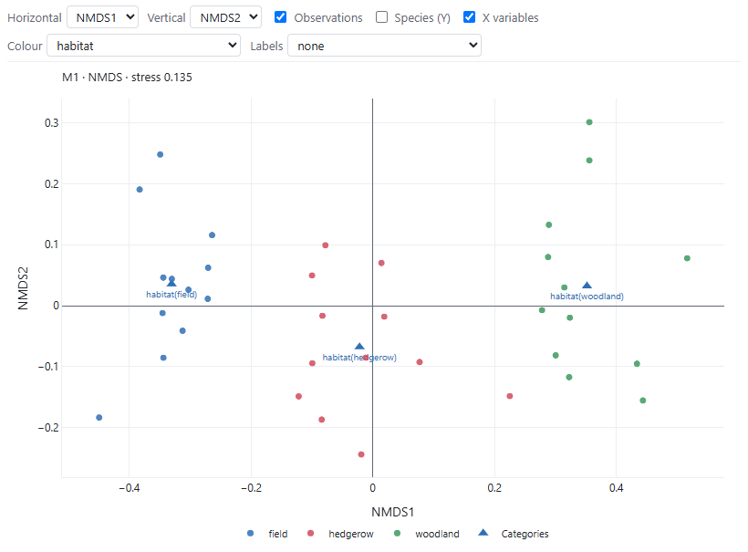

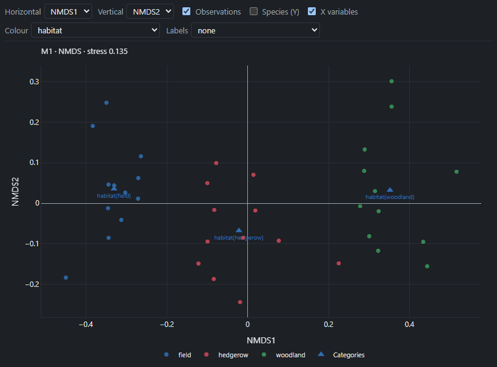
The woodland traps are on the right, the field traps on the left, the hedgerows between them and
more spread out: a hedgerow along a wood holds woodland beetles, one between two fields field
beetles. Only the positions relative to each other are read: the axes have no unit, and an NMDS
has no share of variance per axis. The triangles are the centre of each habitat, fitted afterwards
(the Fitted variables view): the share of the traps' positions on the plane that habitat
explains is R² = 0.8062, p = 0.0010 by 999 permutations. Tick Species (Y): each species sits at
the average of the traps that caught it, Abax parallelepipedus among the woodland traps.

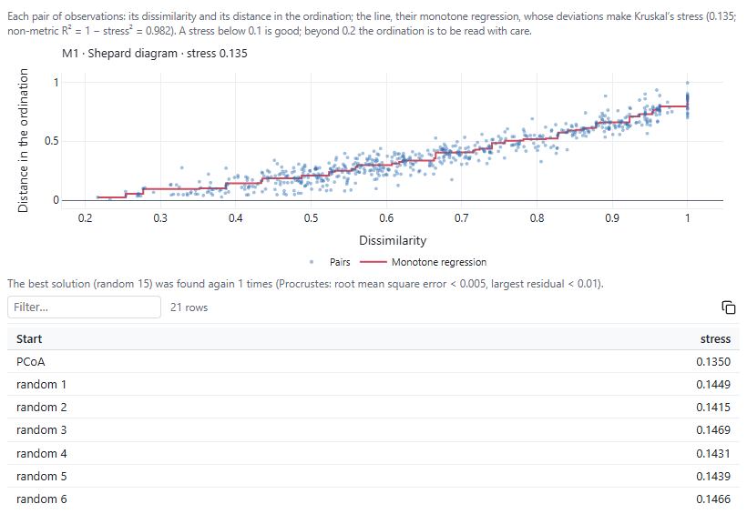

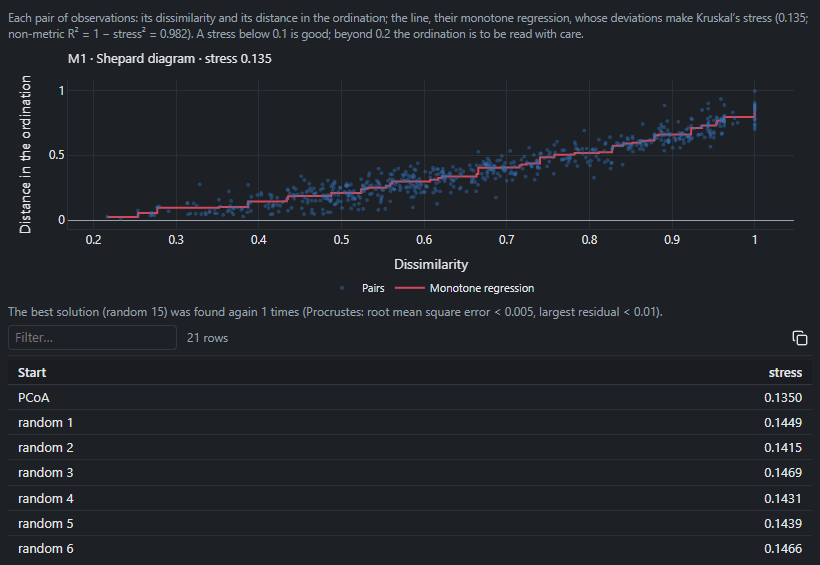
The Shepard diagram checks the ordination: each pair of traps, its dissimilarity on the horizontal axis, its distance on the plane on the vertical one. They rise together; the stress measures their departures from the stepped line (non-metric R² = 1 − stress² = 0.982).
4. The PERMANOVA and its dispersion test
The NMDS shows; the PERMANOVA tests. In Model › Which analysis?, open the recommended analysis, the PERMANOVA. On the General tab, choose the same transformation as for the NMDS, square root then Wisconsin, so that the test is on the distances the plane shows. Click Fit.

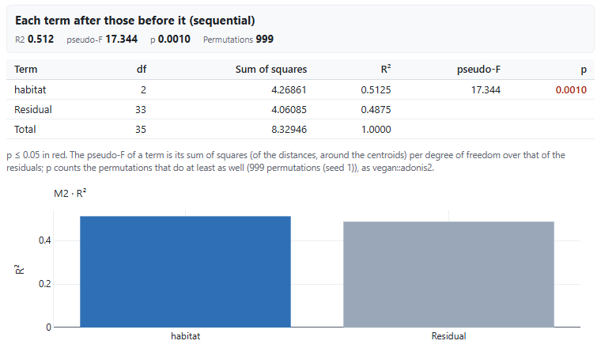

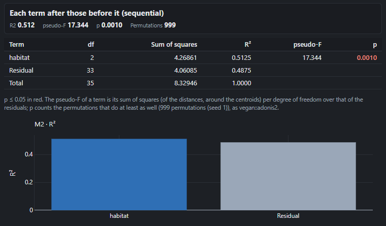
The PERMANOVA (Anderson, 2001) splits the variation of the dissimilarities as an analysis of variance splits that of a variable: within the habitats, and between their centres. R² = 0.512: the habitat explains half of the variation in composition between traps. The pseudo-F (17.344) compares the two parts, and its p comes from 999 permutations of the traps between the habitats: none gave as large an F, hence p = 0.0010, the smallest p that 999 permutations can give.
A PERMANOVA tests the centres, but it also reacts to the spread of the groups: a habitat whose traps are more scattered can make a difference of centres appear. The Multivariate dispersion view tests that spread (Anderson, 2006):

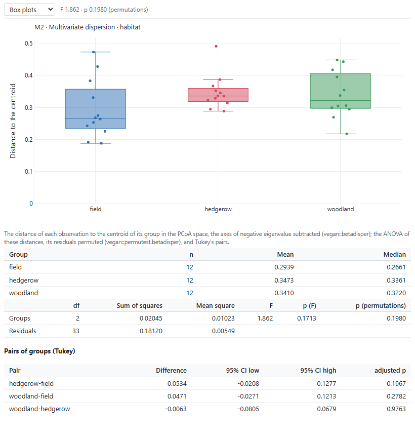

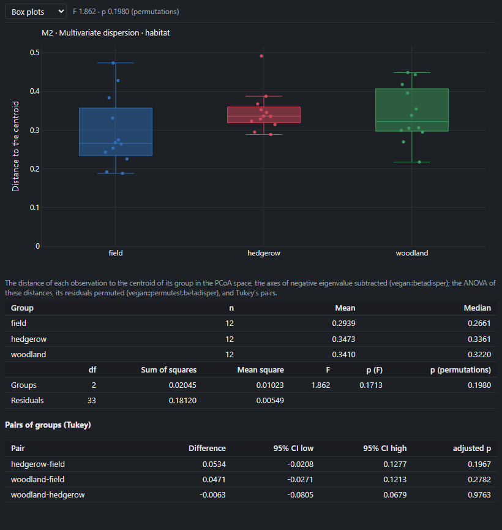
The traps lie 0.2939 from the centre of their habitat on average in the fields, 0.3473 along the hedgerows and 0.3410 in woodland. These spreads don't differ: F = 1.862, p = 0.1980 by permutations, and no pair of Tukey's test. The PERMANOVA's difference is one of composition, not of spread. Had it been significant, the PERMANOVA table and this view would say so in red: the result would then be read with care, with the plane of the NMDS.
5. Indicator species
In Model › Which analysis?, open the Indicator species (IndVal): the species as Y, habitat
as the class. Click Fit, then the Indicator species view:

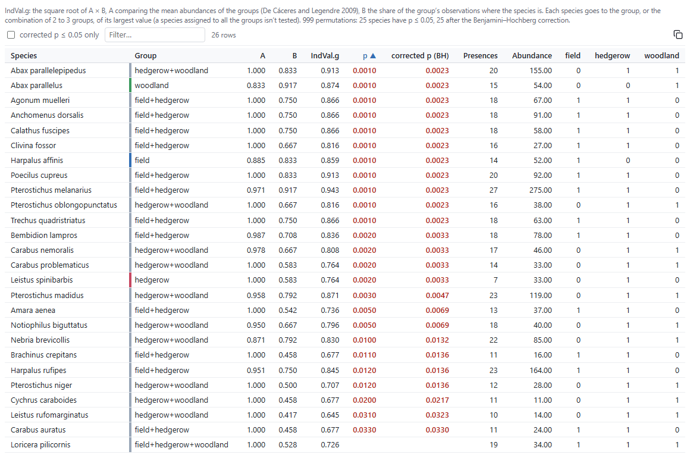

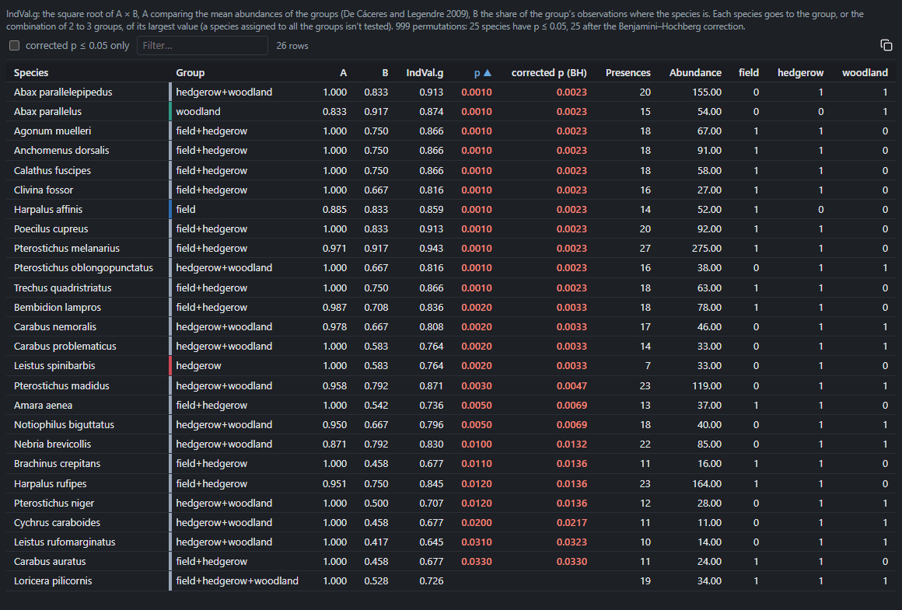
For each species and each habitat, A (specificity) is the share of its abundance in that habitat, compared on equal footing between habitats, and B (fidelity) the share of the habitat's traps where it is found. The indicator value IndVal.g is the square root of A × B (De Cáceres and Legendre, 2009); each species goes to the habitat, or the combination of habitats, of its largest value, tested by 999 permutations, the p corrected over the species.
- Abax parallelus indicates woodland: A = 0.833, B = 0.917; Harpalus affinis the fields; Leistus spinibarbis the hedgerows (A = 1.000: it was caught nowhere else, B = 0.583: in 7 of their 12 traps).
- Most species go to a combination of two habitats: Abax parallelepipedus to hedgerow+woodland (the wooded habitats), Pterostichus melanarius to field+hedgerow (A = 0.971, B = 0.917, the open ground and its margins). The hedgerows share their species with both neighbours.
- Loricera pilicornis is in all three habitats: a species of every group isn't tested.
25 species have a corrected p ≤ 0.05. To give each species a single habitat, choose Combinations of groups: single groups in New model.
6. The Methods and Results texts
Choose the PERMANOVA in the explorer, then Model › Text for the Methods section:

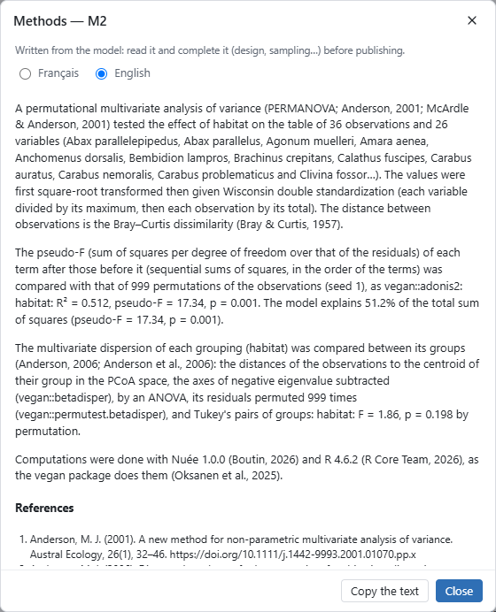

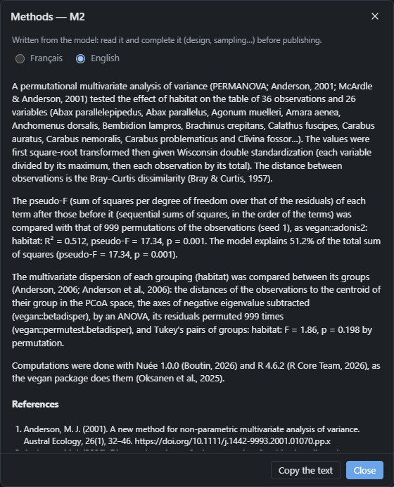
It says, among other things:
The values were first square-root transformed then given Wisconsin double standardization (each variable divided by its maximum, then each observation by its total). The distance between observations is the Bray–Curtis dissimilarity (Bray & Curtis, 1957).
and gives the results with the test:
habitat: R² = 0.512, pseudo-F = 17.34, p = 0.001. […] habitat: F = 1.86, p = 0.198 by permutation.
The NMDS and the indicator species have theirs; each gives the version of R and of Nuée, and the references. Complete them with what the models don't know: the traps, their dates, the identification. For these analyses, the Results text under the Methods is a line of figures (Results of M2 (PERMANOVA): R2 0.51 · p 0.001); the paragraph for the paper is written from the views, for instance:
Assemblages differed between habitats (PERMANOVA on Bray–Curtis dissimilarities: R² = 0.51, pseudo-F = 17.3, p = 0.001), without any difference in multivariate dispersion (F = 1.86, p = 0.20). In the NMDS (stress = 0.135), the hedgerow traps lay between those of woodland and fields. At 15 individuals, hedgerow traps held 8.0 to 10.6 species, against 3.2 to 8.9 in woodland and 5.6 to 9.1 in fields. Twenty-five of the 26 species were indicators of a habitat or of a pair of habitats (IndVal.g, corrected p ≤ 0.05).
Going further
- Permute within (New model, General tab) keeps the permutations within groups: traps set in blocks, a site sampled several years.
- With coordinates, the Mantel test compares the dissimilarities with the geographic distance: do nearby traps resemble each other more?
- Model › One model per response fits a GLM to each species,
habitatas X. - File › Export to R writes a script that redoes these analyses with R alone, the same permutations giving the same p.
- The guide: indicator species, rarefaction, NMDS and PERMANOVA.